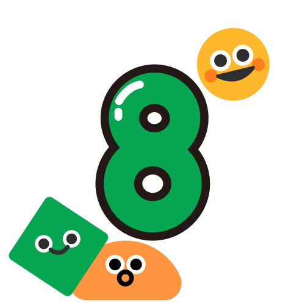
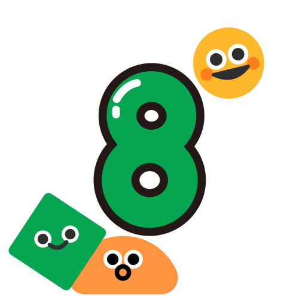

Belajar Matematika Jadi Menyenangkan!
Selamat datang di website belajar matematika untuk peserta didik hebat seluruh indonesia

CAPAIAN PEMBELAJARAN
FASE D
 

Pada akhir fase D, peserta didik dapat menyelesaikan masalah kontekstual peserta didik dengan menggunakan konsep-konsep dan keterampilan matematika yang dipelajari pada fase ini. Mereka mampu mengoperasikan secara efisien bilangan bulat, bilangan rasional dan irasional, bilang desimal, bilangan berpangkat bulat dan akar, bilangan dalam notasi ilmiah; melakukan penfaktoran bilangan prima, menggunakan faktor skalar, proporsi dan laju perubahan. Mereka dapat menyajikan dan menyelesaiakan persamaan dan pertidaksamaan linear satu variabel dan sistem persamaan linear dengan dua variabel dengan beberapa cara, memahami dan menyajikan relasi dan fungsi. Mereka dapat menentukan luas permukaan dan volume bangun ruang (prisma, tabung, bola, limas dan kerucut) untuk menyelesaikan masalah yang terkait, menjelaskan pengaruh perubahan secara proporsional dari bangun datar dan bangun ruang terhadap ukuran panjang, luas, dan/atau volume. Mereka dapat membuat jaring-jaring bangun ruang (prisma, tabung, limas dan kerucut) dan membuat bangun ruang tersebut dari jaring- jaringnya. Mereka dapat menggunakan sifat-sifat hubungan sudut terkait dengan garis transversal, sifat kongruen dan kesebangunan pada segitiga dan segiempat. Mereka dapat menunjukkan kebenaran teorema Pythagoras dan menggunakannya. Mereka dapat melakukan transformasi geometri tunggal di bidang koordinat Kartesius. Mereka dapat membuat dan menginterpretasi diagram batang dan diagram lingkaran. Mereka dapat mengambil sampel yang mewakili suatu populasi, menggunakan mean, median, modus, range untuk menyelesaikan masalah; dan menginvestigasi dampak perubahan data terhadap pengukuran pusat. Mereka dapat menjelaskan dan menggunakan pengertian peluang, frekuensi relatif dan frekuensi harapan satu kejadian pada suatu percobaan sederhana.
FASE E
Pada akhir fase E, peserta didik dapat menggeneralisasi sifat-sifat operasi bilangan berpangkat (eksponen), serta menggunakan barisan dan deret (aritmetika dan geometri) dalam bunga tunggal dan bunga majemuk. Mereka dapat menggunakan sistem persamaan linear tiga variabel, sistem pertidaksamaan linear dua variabel, persamaan dan fungsi kuadrat dan persamaan dan fungsi eksponensial dalam menyelesaikan masalah. Mereka dapat menentukan perbandingan trigonometri dan memecahkan masalah yang melibatkan segitiga siku-siku. Mereka juga dapat menginterpretasi dan membandingkan himpunan data berdasarkan distribusi data, menggunakan diagram pencar untuk menyelidiki hubungan data numerik, dan mengevaluasi laporan berbasis statistika. Mereka dapat menjelaskan peluang dan menentukan frekuensi harapan dari kejadian majemuk, dan konsep dari kejadian saling bebas dan saling lepas.
FASE F
Pada akhir fase F, peserta didik dapat memodelkan pinjaman dan investasi dengan bunga majemuk dan anuitas. Mereka dapat menyatakan data dalam bentuk matriks, dan menentukan fungsi invers, komposisi fungsi dan transformasi fungsi untuk memodelkan situasi dunia nyata. Mereka dapat menerapkan teorema tentang lingkaran, dan menentukan panjang busur dan luas juring lingkaran untuk menyelesaikan masalah. Mereka juga dapat melakukan proses penyelidikan statistika untuk data bivariat dan mengevaluasi berbagai laporan berbasis statistik
MATEMATIKA
Kelas 7
Pelajari operasi dasar matematika dengan cara yang menyenangkan
Kelas 8
Pelajari operasi dasar matematika dengan cara yang menyenangkan
Kelas 9
Pelajari operasi dasar matematika dengan cara yang menyenangkan
Kelas 10
Pelajari operasi dasar matematika dengan cara yang menyenangkan
Kelas 11
Pelajari operasi dasar matematika dengan cara yang menyenangkan
Kelas 12
Pelajari operasi dasar matematika dengan cara yang menyenangkan